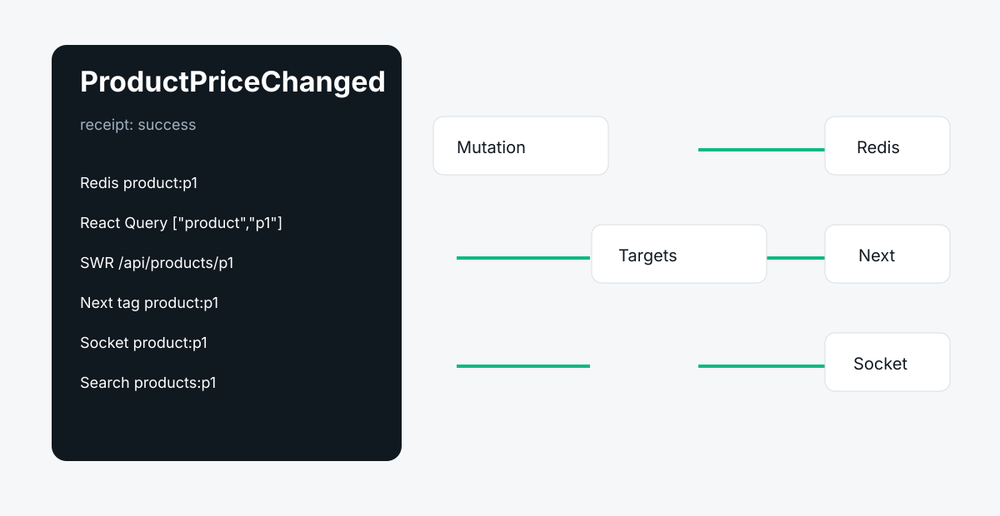

Preview
See blast radius before execution.
Run
Execute adapters with timeouts, retries, priority, and concurrency limits.
Receipt
Keep one support artifact for every target and failure.
One mutation. Zero stale state. Coordinate Redis, React Query, SWR, Redux, Next cache APIs, sockets, queues, search, and webhooks with previewable receipts.
npm install stalezero

See blast radius before execution.
Execute adapters with timeouts, retries, priority, and concurrency limits.
Keep one support artifact for every target and failure.